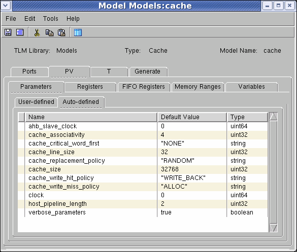

Cache
One of two configuration alternatives exist for using the Cache model:
- It can be placed between the CPU and the Bus.
In this case, the cache has two Bus master ports:
- one (with slave side) to be connected to the master port of the CPU
- one (with master side) to be connected to the Bus
- (Default configuration reflected in the GUI forms) It can be placed between the Bus and the Memory.
Here, the cache has two Bus slave ports:
- one (with slave side) — to be connected to master port of the Bus -- through which the host issues the memory requests;
- one (with master side) — to be connected to the slave port of the Memory -- through which the cache passes requests for the memory.
Cache Parameters
To edit cache parameters for a model based on the generic Cache model:
- In the Modeling window for the Cache model, select the PV > Parameters > Auto-defined tab.
Figure 8‑4.
Cache Model (PV) - Auto-Defined Parameters Tab

- Change default values as needed for the cache parameters.
- Click the Save toolbar icon, or select File > Save to check and save the input values.
Table 8‑2.
Cache Model - Auto-Defined Parameters Tab
|
Field/Control
|
Description
|
Values
|
|
cache_size
|
The cache size in bytes
|
Integer (or parameter of type integer)
|
|
cache_line_size
|
The total size of each line (in bytes). Line should be wider than 1 memory word, in order to exploit the principle of locality.
|
Integer (or parameter of type integer)
|
|
cache_associativity
|
Number of lines per set
|
Integer (or parameter of type integer)
1 - direct mapping
2 - 2-way set associative, 4 - 4-way set associative (same for 8, 16 etc')
Same value as the number of lines - fully associative
|
|
cache_critical_word_first
|
See description below
|
“NONE” / “DEFAULT” / “WRAP_ARROUND” /
“EARLY_RESTART”
(or parameter of type string)
|
|
cache_write_hit policy
|
See description below
|
“WRITE_THROUGH” / “WRITE_BACK” (or parameter of type string)
|
|
cache_write
_miss policy
|
See description below
|
“ALLOC” / “NON_ALLOC” (or parameter of type string)
|
|
cache_replacement
_policy
|
(Used for Set Associative cache only) See description below
|
“RANDOM” / “PSEUDO_LRU” / “ROUND_ROBIN”
(or parameter of type string)
|
|
<input_port_name>_latency
|
Latency (in clocks) of the generated policy (see T->Timing tab)
|
Integer (or parameter of type integer)
|
Options for cache_write_hit_policy include:
- “WRITE_THROUGH” - update memory on every cache write.
- “WRITE_BACK” - update memory only when needed: i.e., when the block has been changed in the cache, and we need to replace it.
Options for cache_write_miss_policy include:
- “ALLOC” - on cache miss - write the block to the memory, and read back the line from the memory to cache. When writing to memory, there is high probability that words near the block, or the block itself, will be required soon.
- “NON_ALLOC” - on cache miss - only write the block to the memory.
cache_replacement_policy addresses which line to replace on a cache miss for a full cache:
- “PSEUDO_LRU” - The block that will be removed from cache will be the block that was least recently used.
- “RANDOM” - The block that will be removed from cache will be chosen in random way.
- “ROUND_ROBIN” - The block that will be removed from cache will be chosen in circular order.
cache_critical_word_first addresses the situation when the read of the whole line takes more time than the read of a particular word from the memory.
- “NONE” - The cache / snoop asks for the whole line from the memory.
- “DEFAULT” - The cache reads the critical word first, and send it back to the CPU. Then, it asks from the memory the rest of the line.
- “WRAP_ARROUND” - In this case, the rest of the line will be read in one burst (assuming that the critical word is in the middle of the line)
- “EARLY_RESTART” - It's not necessary to wait until the cache block is completely read before restarting the processor. As soon as the requested word arrives, it can be forwarded to the CPU.
Registers for Defining Cacheable and Non-cacheable Ranges
The Cache maps the memory, for better access of the currently used data. Assuming that the cache is located between the CPU and the Bus (this configuration is the typical one): the CPU can read or write data from other devices (the memory or others) only through the cache. The problem occurs when the CPU needs to write to trigger registers in those devices. Because a copy of the data is saved in the cache, and because the CPU does not communicate with the real register (only with the saved data in the cache), the change of the data occurs only when the cache restores this data “to the memory” (in our example, the data will go back to the device).
In order to prevent this case, the model builder has added the ability to define and control “cacheable” address ranges and “non-cacheable” ranges. via three registers: Address, Size and Activate (see below for details). By default, the entire range is “cacheable”.
- If a range is “cacheable”, when the CPU accesses this range, the cache will be “available” for this range, and save a copy of the data in the cache.
- If a range is “non-cacheable”, when the CPU accesses this range, the cache will be “unavailable” for this range, and simply pass the request to the Bus (in this case, the cache actually functions as a simple bridge).
For example, in order to define the range 0-499 as cacheable, and 500-999 as non-cacheable, we need to write twice to the registers:
Address: 0 - Size: 500 - Activate: 1
Address: 500 - Size: 500 - Activate: 0
The Activate register functions as a “trigger”: once a write action to the Activate register has taken place, the cache refers to the Address and Size registers, and changes its internal state regarding the cacheable or non-cacheable ranges.